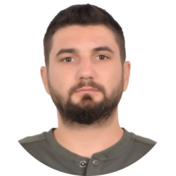

|  | Burak BALLI
Phone: 0537 028 02 38 Address: Maltepe/ISTANBUL Birthdate: 19.03.1993 Driving License: B Military Service: Completed |
| Dates | Company | Description |
|---|---|---|
| 12.2019 - ... | Efectis Era Avrasya | Project Leader in Resistance to Fire |
| 02.2018 - 07.2018 | RM Mechatronics | Design and Analysis in Temporary Structures |
| 06.2017 - 10.2017 | Adidas - Gap | Work & Travel |
| 06.2016 - 08.2016 | Vaillant Group | Intern |
| 06.2015 - 08.2015 | Meb Doğuş | Intern |
| 06.2011 - 09.2011 | Onarsan | Intern |
| 06.2010 - 09.2010 | Cancan Fruit Presses | Intern |
English: Advanced
|
|
|
The Effects of Machinability on Surface Roughness in Turning Steel Materials